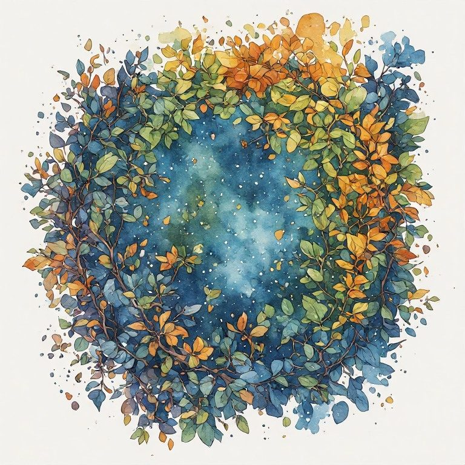

Pillar 4 Witnessing Is The Core Ethical Act
← Pillar 3 Grief Doesn't End · The Creative Radical Collection · Pillar 5 Build Anyway, Knowing It's Temporary →
Pillar: Pillar 4 Witnessing Is The Core Ethical Act · Across every book
What did you look away from today, and what were you offered instead?
The hunger is to look away, because witnessing is heavy. Power offers spectacle, a designated enemy, or the feeling of being seen, anything but the steady burden of seeing what is actually in front of you. The witness stays in the room. Staying present, without fixing or flinching, is itself a refusal.
Notice
Name one thing today you wanted to look away from, whether it was a news story, a person's pain, or something true about your own life. Notice what you reached for instead, whether that was a screen, an argument, or a distraction.
Practice
Choose one hard thing you have been avoiding. Set a timer for five minutes. Stay with it. No fixing, no solving, no explaining it away. Just look at it and let yourself feel whatever comes up.
Reflection
What came up when you stayed past the point where you usually leave the room?
What is easier to look at when you are not trying to solve it first?

Cite this page: Russell, Coral. “Pillar 4 Witnessing Is The Core Ethical Act.” The Marguerite Young Society, updated October 29, 2026. https://marguerite-young-society.coralrussellbooks.workers.dev/creative-05-05-pillar-4-witnessing-is-the-core-ethical-act